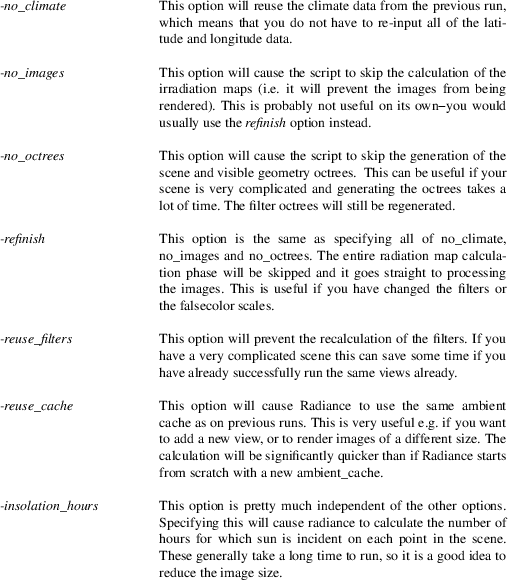
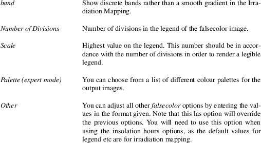
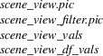
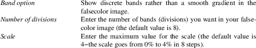

RadivitY − ChapmanBDSP RADIANCE Productivity Tool
radivity [ options ] [ file ]
RadivitY is an interface to apply RADIANCE programming in a more user-friendly and efficient way. Through RadivitY you can simulate (as per July 2013 status) Irradiation Mapping and various Daylight studies, like Daylight Factor, Illuminance and UDI (Useful Daylight Index). You can also perform calculations for the LEED IEQ 8.1 certification and produce high quality rendering under different sky conditions (including images for shadow sequencing).
RadivitY does not normally take command line options. Exeptions below:
Options
|
-h |
Help; this option will display the RadivitY manpage in the Cygwin terminal. This can be useful for a quick check while you are setting up a RadivitY run. |
-i input file
Run RadivitY with an input file. The input file needs to be specified with (relative or full) path. Input files have exactly the same format as RadivitY log files. This means that you can simply take the log file from a previous run and modifiy it to your needs and then run RadivitY with this option. Keep in mind that input files must be CONSISTENT (e.g. schedule file must match the climate coefficients). There are no sophisticated logical checks to alert you of inconsistencies. So far only implemented for UDI and Irradiance.
|
-e |
Expert mode. This mode enables more options and gives greater control over RADIANCE and its outputs. The option has been implemented only partially so far. | ||
|
-u |
Update. This is the same as typing radivity_update in the Cygwin shell. |
Before installing RadivitY please make sure that you have an updated version of Cygwin installed on your computer (minimum requirements: Pyhton 2.7, Mintty, Gnuplot). Otherwise please update Cygwin downloading the setup binary from their webpage−Cygwin.com/setup.exe (all the minimum requirements should be part of the standard install/update). Note that it is not necessary to set environment variables in the Cygwin launcher. Environment variables are set through .bashrc files (standard bash/POSIX practice) which are part of the RadivitY installation (you do not need to do anything).
You also need a working RADIANCE installation on your computer. Ideally RADIANCE should be installed in Cygwin at /usr/local/bin (as opposed to being a part of a DAYSIM or DIVA installation), but DAYSIM/DIVA RADIANCE installation should also work. You can find out which of the installed RADIANCE binaries RadivitY will use by typing type rad in your Cygwin terminal command line.
To install RadivitY open a Cygwin shell, go to (i.e. change directory to) the R-drive and access the RadivitY folder R:\RadivitY (remember that the R: drive is located at /cygdrive/r/...on the Cygwin file system). Cygwin does not like spaces in folder names, and you need to insert a backslash character before each space in a path (google ’spaces in linux path’ for details). You can use the tab key to complete folder names when changing directory to the RadivitY folder on the R: drive (this will help you with spaces etc)
Once in R:\RadivitY, on the command line run ./radivity_installer. This will copy the necessary files to your local machine (scripts, libraries etc).
When the installation has finished, again type radivity and a new terminal window with RadivitY will open. You might need to close all your Cygwin terminals and open a new one to activate all the environment variables in Cygwin before you can start a successful RadivitY run.
RadivitY is still work in progress so make sure you have the latest version on your local drive. To do so, update the software in Cygwin with the command radivity -u (or radivity_update) before you access it with the command radivity (you can do that from anywhere on your machine, there is no need to change to the R-drive for updating).
In the folder R:\RadivitY\doc there is a ‘to do list.doc’ MS Word document, where you can add suggestions to improve the software or report bugs you found while using it. The actions already implemented on that list appear as crossed text.
Before actually running RadivitY you need to set up the working directory. In order to do so, first create a folder in which you want to run your case (remember that the path to your local RadivitY folder should not have any spaces). Then change directory (cd) to that folder, and type mkf (make folderstructure). This will create the folders necessary to set up a project and run RadivitY. Remember that it is easier not to use spaces in directory names When setting up your working directory.
You then need to populate the folders with the input files as detailed below (depending on what case you are running you need different input files).
When running RadivitY from a project folder, the first thing it will do is to check whether all input files are in UNIX format. If any of the files is in DOS format, it will convert them to UNIX (using dos2unix). This process might take a while for large files. Once all the input files are converted, RadivitY will ask you to specify the city. There is a climate files library, which is located at R:\climate_lib (the climate files are copied to your local machine when you install RadivitY, so you do not need to be online to run RadivitY). In order for RadivitY to recognise your city, you need to type it the same way it is in the library. The naming convention is caps for every first letter and no spaces. (e.g. London, SaoPaulo). It might recognise if you type all lower case, but then if next time you type upper case, the software will not recognise the climate coefficients generated earlier and there will be an error message. So stick to the naming convention described above to avoid errors.
If your city is not yet in the database, you can add the epw file to R:\climate_lib. You will need to update RadivitY (see above) in order to update your local climate library and activate the added city.
After defining the city, you will reach the main menu, where you can navigate to the desired RadivitY function using the indicated number+ENTER.
Not in
project folder
If for some reason you are running RadivitY from a different
folder (i.e. a folder that is not a project folder),
RadivitY will ask you for the path to your project before
asking you for the city.
Output
Once RadivitY has completed the required task (module) it
will take you back to the main menu, where you can start a
new calculation again selecting one of the options. The
results of a Radivity calculation are located in the
’out’ folder (which is created the first time an
instance of RadivitY is run on the project). The
corresponding folder will have a name that includes the type
of simulation, date and time so you can easily find the
results.
Log
files
Each time you run RadivitY, it will produce a log file which
is stored in the ’log’ folder and which has a
time stamp from the moment you started the RadivitY
calculation. In the log file you will find the options you
used for that particular run, so you can replicate it if
need be. The log file is also useable as an input file for
RadivitY (which could save some time setting up the
run).
RadivitY can be
run in parallel (i.e. you can run several instances of
RadivitY simultaneously), but some precautions need to be
taken:
Different Modules
When running several instances of RadivitY on the same project, but in different modules (e.g. one in Daylight Factor and one in Irradiation Mapping), just make sure you have all the input files in their respective folders. It should then be no problem to run them in parallel from the same project folder. The only source of conflict that could arise is that you might want different scene files in each module (one geometry for Irradiation Mapping and a different one for Daylight Factor). If that is the case, rather then putting both scenes in the scene folder, create a different project folder for each instance and run one instance of RadivitY from each folder (since RadivitY would run all scenes in all instances, which would take unnecessaryly long).
Same Module
If you need to run several instances of RadivitY on the same project and in the same module (e.g. you might need to run Daylight Factor for different scenes such that the grid of one scene does not match the grid of another), you will need to create several project folders−each for every scene−and run one instance of RadivitY from each project folder.
Irradiation Mapping produces renderings of the scene(s) with colour mapping of the levels of irradiation on selected surfaces from different angles/positions.
Input
files:
Scene (.rad file)
This is the geometry of the scene, which can be obtained exporting from Ecotect or through the dxf2rad command. You can have several scenes (e.g. if you have different possible geometries for the building in question) which will be calcualted sequentially (anything with a .rad extension will be considered).
View (.vf file)
The different views at the scene have to be defined in a view file. For Irradiation Mapping you need perspective views which need to be stored in the perspective sub-folder within the views foler. You can have several views, each of them will be rendered for each of the scenes (anything with a .vf extension will be considered).
Filter (.rad file)
You will need a filter file in order to display the Irradiation Mapping only on the building(s) that you want. This filter should render all other buildings as black (R 0-G 0-B 0). There should be only one filter for each scene, and the name of the filter should be XYZ_filter.rad, where XYZ is the name of the scene it is associated with. Note that this is different to the other daylight studies, where the filter is associated with a view, and therefore XYZ would be the name of the view rather than the scene. Consequently the filter is not stored in a sub-folder, but directly in the filter folder.
Schedule (.sc file)
This is optional. Standard schedule options are available through RadivitY as well.
Visible Geometry (.rad file)
This is optional. It can be used to hide certain parts of the geometry in order to have a better view at interesting parts.
As you run the Irraditaion Mapping RadivitY will ask for the following options:
Options:
Script Options
The Irradiation Mapping module is based on a previously existing script that had a series of command line options. You can combine several of them by entering the corresponding letters separated by space and pressing ENTER. For a new complete Irradiation Mapping you would not normally want any options, so you just press ENTER. The individual command line options are explained below (taken from Andy’s Irradiation Mapping manual).

RADIANCE Parameters
The default RADIANCE parameters will be listed. You can adjust them by typing ’y’ and pressing ENTER. When doing so, you will be asked to enter the parameter(s) you want to adjust. Follow the format indicated in the example and press ENTER.
Falsecolor Image Parameters
You will be asked for a series of parameters regarding the falsecolor image (Note that the default values are for normal irradiation mapping, when using the insolation hours options you will need to adjust all of them):

Image Size (expert mode)
You can change the size of the output images (pixels). If you choose to do so, type ’y’, press ENTER and in the next prompt enter the x and y resolution separated by space and press ENTER.
Scene Rotation
You might want to obtain Irradiation Mappings for several orientations of the building. By default RadivitY assumes that your scene points due North (0 degrees rotation). If choose ’y’, you can enter several orientations separated by space, and RadivitY will produce Irradiation Mappings for all of them (sequentially).
Schedule
If you want the Irradiation on a building during a certain period of time (e.g. during the summer) or if you want to filter out weekends for example, you can create a schedule file and put it in the schedule folder. If RadivitY finds a schedule, it will ask you whether you want to use it or not. If not, or if it does not find one, it will ask you whether you want to create a schedule. Follow instructions on screen.
Output
Upon completion, RadivitY will produce an image for each
scene and each view. If filters are correctly defined, only
the building in question should display Irradiation Mapping,
while surrounding buildings and the ground should be shown
as grey.
Considerations
When using the options detailed above you need to be careful
of not mixing up different runs of Irradiation Mapping.
Although RadivitY tries to prevent involuntary erasing and
replacing of files, it cannot avoid such mix ups entirely.
For example, if you want to refinish the images of a
previous run make sure that the configuration files (stored
in modules/irrad/config) are the same that were used
in the original run (especially image size).
Insolation
Hours Falsecolor Parameters
The insolation hours option plots the number of hours a
certain surface is hit by direct sunlight. The scale should
therefore be in accordance with the maximum hours (depending
on the schedule you use). The legend (-l option) should be
changed to ’hours’. The multiplier (-m option)
should be set to one.
Input
File
The easiest way of setting up an input file is to use the
log file from a previous run. They should be more or less
self-explanatory, but again you need to be careful not to
produce any inconsistent commands (e.g. image sizes that do
not match the original).
To be completed when updated.
Input
files:
Scene (.rad file)
This is the geometry of the scene, which can be obtained exporting from Ecotect or through the dxf2rad command. You can have several scenes (e.g. if you have different possible geometries for the building in question) which will be calcualted sequentially (anything with a .rad extension will be considered). You can name your scene file(s) however you wish, as long as the names have no spaces. Make sure your material properties are correct.
Grid (.pts file)
LEED IEQ 8.1 percentages are calculated on grid points (.pts file), which can be obtained exporting a grid from Ecotect. The grid files should be called room_X.pts, X being the floor level.
View (.vf file)
You will need a (parallel) view with clipping planes to get images. The clipping plane should be at the height of the plane where you want to measure the illuminance (usually 75 cm above floor level). You can have several view files, and they should be stored in the parallel sub-folder within the views folder. Views also normally require a filter in order to display only the surface(s) of interest. If you want a rendered output, you do not need a grid file.
Filter (.rad file)
You will need a filter file in order to display the results only on the surface(s) that you want. This filter should render all other surfaces as black (R 0-G 0-B 0). The name of the filter should be XYZ_filter.rad, where XYZ is the name of the view (as in DF and Illuminance analysis, the filter is associated to a view), and it should be stored in the parallel sub-folder within the filter folder.
RadivitY will ask you for a couple of options:
Options:
Level of accuracy
This can be low, high or custom. Note that with the high option it takes a very long time to run! Below the corresponding RADIANCE parameters are listed. With the custom option you can adjust all of them separately.
Low: w -h -I+ -ab 4 -aa 0.1 -ad 512 -as 256 -ar 32
High: -w -h -I+ -ab 6 -aa 0.1 -ad 512 -as 256 -ar 32
Enter the option you want by typing low/high/custom (whichever you want) and pressing ENTER.
The Daylight Factor is the fraction of external light that penetrates into the rooms of the building. As per convention the Daylight Factor is calculated using an overcast sky. Results can be the Factors on an Ecotect grid, images (.png) created with GNUplot or a complete RADIANCE rendering.
You access the Daylight Factor module through the Daylight Studies module in the first RadivitY menu.
Input
files:
Scene (.rad file)
This is the geometry of the scene, which can be obtained exporting from Ecotect or through the dxf2rad command. You can have several scenes (e.g. if you have different possible geometries for the building in question) which will be calcualted sequentially (anything with a .rad extension will be considered). You can name your scene file(s) however you wish, as long as the names have no spaces. Make sure your material properties are correct.
Grid (.pts file)
The Daylight Factor is normally calculated on grid points (.pts file), which can be obtained exporting a grid from Ecotect or by generating it in the Utilities module (explained below). The grid files should be called X_Y.pts, X being the room identifier and Y the floor level. Make sure you keep the same grid in Ecotect, if you want to import the results later. Whenever a .pts file is found in the grids folder, RadivitY will perform the calculations on the grid and will NOT produce renderings.
View (.vf file)
Alternatively to the grid, you can render the Daylight Factor on a virtual surface. For this you will need a (parallel) view with clipping plane(s). The clipping plane needs to be present for two reasons: First it will enable you to look into the room; second−and more importantly−it will define the virtual plane where the Daylight Factor is measured. The view files have to be stored in the parallel sub-folder within the views folder. Views also normally require a filter in order to display only the surface(s) of interest. If you want a rendered output, you must not put a grid file in the grids folder since RadivitY will always perform a grid based calculation if a grid file is present (you can create a sub-folder in the grids folder and put all your .pts files in there−RadivitY will not consider them).
Filter (.rad file)
When producing Daylight Factor renderings (as opposed to grid based solutions) you will need a filter file in order to display the Daylight Factor only for the surface(s) that you want. This filter should render all other surfaces as black (R 0-G 0-B 0). If you want to calculate the Daylight Factors on a grid, you do not need a filter. Note that the filter is associated with the view, and therefore the naming convetion for the Daylight Factor filters is XYZ_filter.rad, where XYZ is a view name. Filter files should be stored in the parallel sub-folder within the filter folder.
Note that if you have multiple scenes and multiple grids (or views), RadivitY will combine them all (which might become quite time consuming).
RadivitY will ask you for a couple of options:
Options:
Refinish
If (and only if) relevant files from a previous run are in the output folder of the df module (modules/da/df/out), RadivitY will ask you whether you want to refinish existing renderings rather then performing a new run. The relevant files are:

These files are stored in the main output folder for each successful Daylight Factor analysis (out/DF_images_timestamp/renderings), and can be copied back into the output folder of the df module in order to force a refinish of this particular set of images (make sure that the scene and view files have the same name as for the original analysis−they don’t actually need to be the same files, just the same name). If not all of these files are present, or if they have inconsistent names, RadivitY will skip this step and will not ask if you want to refinish (because it will assume that there is nothing to refinish).
Thresholds (only in expert mode)
This option permits you to adjust the lower and upper thresholds to your particular needs (default thresholds are 1% and 1.5%). As the thresholds are relatively standard, this option is skipped unless in expert mode (you can always adjust thresholds when refinishing, see option above).
Level of accuracy
This can be low, high or custom. Note that with the high option it takes a very long time to run! Below the corresponding RADIANCE parameters are listed. With the custom option you can adjust all of them separately.
Low: w -h -I+ -ab 4 -aa 0.1 -ad 512 -as 256 -ar 32
High: -w -h -I+ -ab 6 -aa 0.1 -ad 512 -as 256 -ar 32
Enter the option you want by typing low/high/custom (whichever you want) and pressing ENTER. When selecting custom, you will need to provide the parameters and values that you want to change (e.g. -aa 0.05 -ar 128).
Image resolution
This option is only available when running with views. A decent image should have at least 500 pixels resolution, good quality pictures up to 3000 or more. Note that the resolution is for the entire picture, i.e. including the areas that are filtered out. Keep in mind that high resolution will produce a large amount of data (for 3000 pixel images you can easily exceed 15 Mb of output).
Produce GNUplot images
This option is only available when running on a grid. If answered with ’y’ RadivitY will produce GNUplot plots of the values of the Daylight Factor on the grid(s). This will not greatly impact on your running time, so you might as well produce images just in case. Select your option (y or n) and press ENTER.
Falsecolor options

Output
The .dat file produced by the Daylight Factor module
can be imported back into Ecotect on the ‘Grid
Management’ option under ‘Manage Grid
Data’. The ‘analysis_DF’ csv file
contains average, minimum and percentages within certain
thresholds (1% and 1.5%) for each grid on each scene.
The Illuminance option is very similar to the Daylight Factor option, the difference being that Illuminance gives the actual level of light in the room (as opposed to the fraction of the external light). Thus its results depend on the brightness and nature of the sky.
Input
files:
Scene (.rad file)
This is the geometry of the scene, which can be obtained exporting from Ecotect or through the dxf2rad command. You can have several scenes (e.g. if you have different possible geometries for the building in question) which will be calcualted sequentially (anything with a .rad extension will be considered). You can name your scene file(s) however you wish, as long as the names have no spaces. Make sure your materials properties are correct.
Grid (.pts file)
The Illuminance is calculated on grid points (.pts file), which can be obtained exporting a grid from Ecotect. The grid files should be called room_X.pts, X being the floor level. Make sure you keep the same grid in Ecotect, if you want to import the results later. Whenever a .pts file is found in the grids folder, RadivitY will perform the calculations on the grid and will NOT produce renderings.
View (.vf file)
Alternatively to the grid, you can plot the Illuminance on a virtual surface. For this you will need a (parallel) view with clipping plane(s). The clipping plane needs to be present for two reasons: First it will enable you to look into the room; second−and more importantly−it will define the virtual plane where the Illuminance is measured. The view files have to be stored in the parallel sub-folder within the views folder. Views also normally require a filter in order to display only the surface(s) of interest. If you want a rendered output, you must not put a grid file in the grids folder since RadivitY will always perform a grid based calculation if a grid file is present (you can create a sub-folder in the grids folder and put all your .pts files in there−RadivitY will not consider them).
Filter (.rad file)
When producing Illuminance renderings (as opposed to grid based solutions) you will need a filter file in order to display the Daylight Factor only on the surface(s) that you want. This filter should render all other surfaces as black (R 0-G 0-B 0). If you want to calculate the Illumiance values on a grid, you do not need a filter. Note that the filter is associated with the view, and therefore the naming convetion for the Daylight Factor filters is XYZ_filter.rad, where XYZ is a view name. Filter files should be stored in the parallel sub-folder within the filter folder.
Note that if you have multiple scenes and multiple grids (or views), RadivitY will combine them all (which might become quite time consuming).
RadivitY will ask you for a few options:
Options:
Day of the year
As stated above the Illuminance calculation depends on the sky and thus it needs to create one based on information of location and time. You can enter several dates (separated by spaces) which will be calculated sequentially. The input format is DD/MM. Press ENTER to continue.
Hour of the day
For each of the dates entered you need to provide a time of the day. The hour format is 0-24. Press ENTER to continue.
|
Sky |
You can calculate Illuminance values for several different skies, and you need to select an appropiate one for each of the dates you entered before. Select your preferred sky by typing e.g. +s and then pressing ENTER. |
Brightness
When selecting a cloudy sky the brightness of the sky can be either determined from the wheather file (based on a frequency analysis−Desing Sky), or directly calculated by RADIANCE based on the latitude. Type y or n and press ENTER.
Thresholds
You can choose two thresholds that will be plotted as contour curves in the output images (if you decide to plot images). Percentage of areas also will be computed based on these thresholds. If you press ENTER without specifying thresholds, RadivitY will use the default thresholds indicated (300 and 1000 lux). The thresholds are only important for numerical ouptut of percentages and for the GNUplot images. They do not alter the results in the .dat file that is re-imported into Ecotect.
Level of accuracy
This can be low, high or custom. Note that with the high option it takes a very long time to run! Below the corresponding RADIANCE parameters are listed. With the custom option you can adjust all of them separately.
Low: w -h -I+ -ab 4 -aa 0.1 -ad 512 -as 256 -ar 32
High: -w -h -I+ -ab 6 -aa 0.1 -ad 512 -as 256 -ar 32
Enter the option you want by typing low/high/custom (whichever you want) and pressing ENTER.
Produce images
This option is only available when running on a grid. If answered with ’y’ RadivitY will produce GNUplot plots of the values of Illuminance on the grid(s). This will not greatly impact on your running time, so you might as well produce images just in case. Select your option (y or n) and press ENTER.
Output
The .dat file produced by the Illuminance module can
be imported back into Ecotect on the ‘Grid
Management’ option under ‘Manage Grid
Data’. The ‘analysis_Illum’ csv
file contains average, minimum and percentages within the
given thresholds for each grid on each scene.
UDI visualises the percentage of time different areas of a room are within certain ranges of illumination. In other words the colouring of the resulting UDI image represents the amount of time the room is within given illumination ranges.
Since UDI is typically run considering the whole year, it would be prohibitively expensive to produce a RADIANCE rendering for each hour (there are 8760 hours in a year). Instead, the UDI module divides the sky into 145 patches (and 72 corresponding solar positions), and calculates the illumination at any given hour using a linear combination of the various sky patches. To do so, RadivitY needs to calculate the weighting coefficients of the linear combination based on the local climate, and then render the scene in question for all the sky patches.
The weighting coefficients only need to be computed once for a given location with a given schedule. It takes about 1 hour to do so, and ideally the coefficients can be re-used if a new UDI instance needs to be run (e.g. a modified geometry). They need to be re-computed if e.g. the schedule changes.
The sky-patch renderings of the scene take up most of the run-time of UDI. Similarly to the weighting coefficients they cam be re-used, but only if the geometry (and location) does not change. A possible case could be if e.g. a different schedule needs to be analised.
RadivitY will guide you through the decision making process.
Input
files:
Scene (.rad file)
This is the geometry of the scene, which can be obtained exporting from Ecotect or through the dxf2rad command. You can have several scenes (e.g. if you have different possible geometries for the building in question) which will be calcualted sequentially (anything with a .rad extension will be considered).
View (.vf file)
The different views at the scene have to be defined in a view file. For UDI you need parallel views which need to be stored in the parallel sub-folder within the views foler. You can have several views, each of them will be rendered for each of the scenes (anything with a .vf extension will be considered). Views also normally require a filter in order to display only the surface(s) of interest.
Filter (.rad file)
You will need a filter file in order to show only on the surface(s) that you want in the UDI images. This filter should render all other surfaces as black (R 0-G 0-B 0). Note that the filter is associated with the view, and therefore the naming convetion for the UDI filters is XYZ_filter.rad, where XYZ is a view name. Filter files should be stored in the parallel sub-folder within the filter folder.
Grid (.pts file)
For faster calculations you can use a grid (.pts file) instead of a view, which can be obtained from Ecotect. In the case you choose to use a grid, you do not need a filter.
Schedule (.sc file)
This is optional. Standard schedule options are available through RadivitY as well.
RadivitY will ask you for a few options:
Options:
Palette (only expert mode)
The colour palette for the output images can be changed. The default−mono_r−goes from red to white. If answered with ’y’, several available palettes are displayed and you can choose one by typing the token (word) at the far right (e.g. hot) and pressing ENTER.
Calculate weighting coefficients
If RadivitY finds an existing coefficient file, it will ask whether you want to use it, or whether you want to re-calculate the weighting coefficients. Select ’y’ or ’n’ based on criteria mentioned above and press ENTER.
Render scene(s) for sky patches
If RadivitY finds existing renderings, it will ask whether you want to use them, or whether you want to re-render the scene(s). Select ’y’ or ’n’ based on criteria mentioned above and press ENTER.
Thresholds
Typically UDI is run with 3 different ranges of illumination−under-illuminated, adquatly illuminated and over-illuminated (in which case you would need 2 thresholds). However, occasionally a third range might be of interest, so that there are 3 default thresholds. If you only want 3 ranges, simply repeat one of the thresholds, e.g. 300 300 15000. If you press ENTER without entering any thresholds, RadivitY will use the default thresholds (100, 2000 and 10000).
Resolution of sky-patch renderings
You can select whether you want the renderings of the scene (one for each sky patch) to be produced with high or low resoultion. Note that using low resolution does not mean that your final UDI image will be of lower resolution, as the results are expanded and interpolated over a full 512x512 image. It just means that the rendering process will be considerably shorter.
Using the grid option will speed up the process even more, but the final UDI images might become a bit chunky (they are not interpolated).
RADIANCE Parameters Sun
The default RADIANCE parameters for the sun renderings will be listed. You can adjust them by typing ’y’ and pressing ENTER. When doing so, you will be asked to enter the parameter(s) you want to adjust. Follow the format indicated in the example and press ENTER.
RADIANCE Parameters Sky
The default RADIANCE parameters for the sky renderings will be listed. You can adjust them by typing ’y’ and pressing ENTER. When doing so, you will be asked to enter the parameter(s) you want to adjust. Follow the format indicated in the example and press ENTER.
Schedule
If you want to exclude periods of time (e.g. non-office hours, weekends and bank holidays), you can create a schedule file and put it in the schedule folder. If RadivitY finds a schedule, it will ask you whether you want to use it or not. If not, or if it does not find one, it will ask you whether you want to create a schedule. Follow instructions on screen. You can find a schedule with UK working hours (9-18) disconsidering weekends and bank holidays R:\RadivitY\schedule. Copy and paste into your ‘schedule’ folder. It will ask you to re-type your schedule file (this is just a security check, for you to make sure your schedule file is the same that was used for the calculation of the coefficient file).
Output
The output of the UDI analysis consists of eight images: 2
for each of the ranges (under-illuminated, partially or
suplementary illuminated, adequately illuminated and
over-illuminated). One of each of these images shows all the
percentages of time each part of the room is within that
range, going from 0% to 100% in steps of 10, and the other
shows only which parts of the room are over 50% of the time
in that range and which part are under 50% of the time in
that range (pass−not pass).
This option contains a few tools for RADIANCE pre-processing. As of July 2013 there are two tools in this option:
Grid from
view
This tool allows you to produce a measuring grid as used in
Daylight Factor and Illuminance analyisis.
Options:
Resolution: This is the number of divisions of the view you specify. If -vv and -vh (in the view file) have different values, it will be the division of the larger of both numbers. For instance, if your -vh is 30 m, then requesting a resolution of 300 will put a grid point every 10 cm.
|
Input: |
View file: You need a (parallel) view file, which needs to be stored in the parallel sub-folder within the views folder. |
Filter (.rad file): You also need a filter file which indicates on what surface(s) you want to create the grid. This filter should render all other surfaces as black (R 0-G 0-B 0). Note that the filter is associated with the view, and therefore the naming convetion for the filters is XYZ_filter.rad, where XYZ is a view name. Filter files should be stored in the parallel sub-folder within the filter folder.
Output:
The produced grid files are stores in the grids folder.
Check
Filters
This tool produces black-white images of the filtered
surfaces. This can be useful for checking that the views and
filters properly show all the required surfaces before
running a full RadivitY case. There are no options.
Input: View file: You need a (parallel) view file, which needs to be stored in the parallel sub-folder within the views folder.
Filter (.rad
file): You also need a filter file which indicates which
surface(s) you want to see in your RadivitY analysis. This
filter should render all other surfaces as black (R 0-G 0-B
0). Note that the filter is associated with the view, and
therefore the naming convetion for the filters is
XYZ_filter.rad, where XYZ is a view name.
Filter files should be stored in the parallel
sub-folder within the filter folder.
Output:
The produced images are stored in the tmp folder.
Each instance of RadivitY looks for a folder within the modules folder corresponding to the module that is being run (e.g. da for Daylight Factor, irrad for Iraddiation Mapping etc). If the module is run for the first time, RadivitY will create the folder.
In these folders all the files necessary for this module are kept (some of them keep information from previous runs and make the re-run faster). One particular folder within these folders is tmp, where temporary files are stored. This folder is swept clean each time a new instance of RadivitY is run. Log files for all the sub-processes (scripts) of RadivitY are stored in the tmp folder.
If RadivitY did not produce the expected results, the tmp folder within the corresponding module folder is always the firt place to look for errors. Each script that is called in RadivitY will produce a log file and you will find some hint on what might be the problem.
Whenever one of the scripts called by RadivitY exits due to an error, it will send a signal to RadivitY and you will find an error message in the RadivitY window at the end of the run.
Typical
Problems:
−Some input file is missing
If some of the input files are missing or wrongly named (e.g. the filter needs to stick to the naming convetion explained above), RadivitY will not be able to produce the desired images.
The error message in one of the log files in the tmp folder would say something like:
cannot open scene_filter.rad: no such file or directory
Make sure that all files are placed in their corresponding folder and are named as required by RadivitY.
−Corrupted Scene file
Ecotect tends to randomly put 0−radius cylinders in the rad-file. This causes oconv (the program that generates the octree) to crash. You would find an error message like the following find in one of the process log files:
oconv: fatal − illegal radii for cylinder "someName".
You can clean the rad-file from ill-defined cylinders using the clean_cylinders.py script (usage−type the following in the Cygwin command line: echo Radile_to_be_cleaned.rad Radfile_clean.rad | clean_cylinders.py). Radfile_clean.rad will be the clean rad-file.
−Ill-defined view files
At the present stage RadivitY only allows squared renderings, which means that the horizontal and vertical extent of the view−defined in the view file through parameters -vh -vv−have to be the same. The error message in one of the log files in the tmp folder would be of the following form:
needs to be added...
Rectangular (non-squared) renderings are to be added to RadivitY in the near future.
−Memory problems
This has happened to me from time to time (e.g. in UDI). You will find an error message of the kind:
51533577
[main] bash 400 fork: child -1 - forked process 5500 died
unexpectedly, retry -0, exit code -111234145, errno 11
path/to/script.sh: fork: retry: Resource temporarily
unavailable.
This is an Cygwin/Windows problem and the only real solution is re-starting your computer and running RadivitY from scratch.